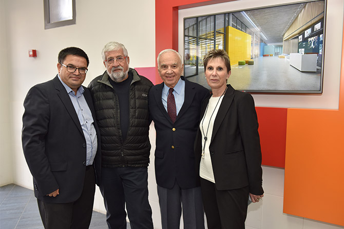
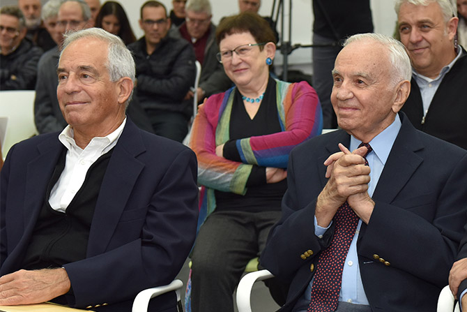
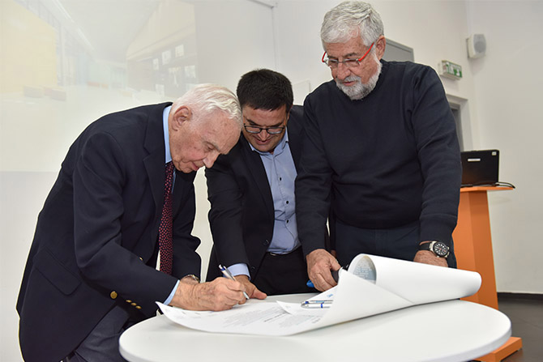

את אבן הפינה למרכז הניחו בטקס שנערך ב-31 בינואר 2017
מר מורטון מנדל, יו"ר קרן מנדל,
פרופ' יהודה ריינהרץ, נשיא קרן מנדל,
גב' גילה בן-הר, מנכ"לית מט"ח,
מר עמרם מצנע, יו"ר קרן ירוחם החדשה ומר מיכאל ביטון, ראש מועצת ירוחם.

המרכז החדש יכלול חמישה מתקנים:
- HUB - סביבת עבודה פתוחה המארחת קבוצות פעילות של MindCET – מרכז המנהיגות והחדשנות של מט”ח, התומך בשיתופי פעולה ייחודיים בין יזמים, חוקרים, מורים ותלמידים. המקום יהיה פתוח גם לחיילים ולקצינים מקמפוס ההדרכה החדש של צה"ל ולעובדי היי-טק מהנגב כולו.
- ארגז החול - מקום לתצוגה ולניסיון מעשי של טכנולוגיות פורצות דרך בתחום הטכנולוגיה בחינוך ("EdTech"). המקום מיועד לסדנאות וללימוד עצמאי למורים, לחיילים ולאנשי טכנולוגיה.
- Fab lab - מעבדת מֵייקרים המשלבת בית מלאכה מסורתי עם תכנות, הדפסת תלת-ממד וחיתוך לייזר, ומאפשרת לתלמידים, למורים וליזמים ליצור כמעט כל דבר שיעלו על דעתם. המעבדה תשרת קבוצות מקמפוס ההדרכה של צה"ל, ובני נוער מירוחם ומהפזורה הבדואית הקרובה.
- הכיתה המעופפת - כיתה המיועדת לניסויי מחקר, הכוללת עזרים טכנולוגיים שיסייעו לחוקרים (כלי הקלטה ותיעוד מובנים, חלון תצפית חד-כיווני, חיישנים ונקודות תצפית).
- אגף מחקר ובו כיתות לימוד ואולם, לשימוש הקבוצות השונות שישתתפו בפעילות של MindCET, וכן לכנסים והשתלמויות לצוותים של בתי ספר, מעצבי דעת קהל, עמיתים ובוגרים של בית ספר מנדל למנהיגות חינוכית ולדרגי הפיקוד של קמפוס ההדרכה של צה"ל.
מורטון מנדל, יו"ר קרן ג'ק, ג'וזף ומורטון מנדל, אמר בטקס: "כחלק ממערכת היחסים ארוכת הטווח שלנו עם ירוחם ותושביה, קרן מנדל מברכת על ההזדמנות לסייע לירוחם בהקמת המרכז המתקדם לחדשנות חינוכית, אשר ישלב פעילות עם בסיסי ההדרכה של צה"ל בנגב. תרומה זו מבטאת את רצוננו לתמוך בירוחם, בנגב ובקידום החדשנות בישראל."

"מרכז ג'ק, ג'וזף ומורטון מנדל לחדשנות ישפיע הרבה מעבר לגבולותיו, ויאפשר לנו להעמיק את השפעתו של MindCET במערכת החינוך – בנגב ובעולם כולו", אמרה
גילה בן-הר, מנכ"לית המרכז לטכנולוגיה חינוכית.
מיכאל ביטון, ראש מועצת ירוחם, אמר: "המרכז הזה הוא השלב הבא בשינוי בירוחם. בעוד שנתיים, כשייפתח, יעבדו פה מאות אנשים: מחנכים, מנהיגים, יזמים".
עמרם מצנע, יו"ר קרן ירוחם החדשה, אשר ניהלה את הקמת מתקני MindCET, ציין: "המרכז החדש יהיה לא רק בית למחנכים, אלא גם לכל תושבי ירוחם, וישמש כמרכז לאומי, ואפילו בינלאומי, לטיפוח הוראה, חינוך ומנהיגות".
בסיום הטקס חתמו הנוכחים על מגילת אבן הפינה למרכז ג'ק, ג'וזף ומורטון מנדל לחדשנות. במגילה נכתב: "מי ייתן ומרכז זה יעניק לכל הבאים בשעריו סביבה מאפשרת, חדשנית, יצירתית ומלמדת, ושהחיבור שייווצר בין יזמים, מפתחים, מחנכים וחוקרים, יביא לפיתוח פתרונות חינוכיים מבוססי טכנולוגיה חדשנית ופורצת דרך, שיקדמו את החינוך בישראל וברחבי העולם כולו. אנו מודים לקרן ג'ק, ג'וזף ומורטון מנדל על תמיכה נדיבה זו ועל מסירותה לטיפוח הנגב, החינוך ומדינת ישראל, לטובת כל בני האדם באשר הם."

{kind=link}
{kind=link}
{kind=link}